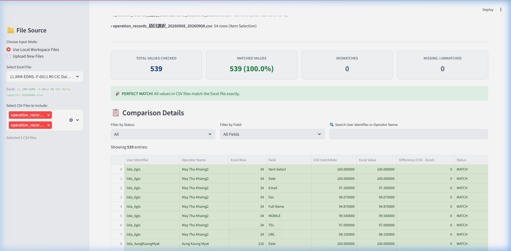

အသုံးပြုသူလက်စွဲနှင့် စနစ်တပ်ဆင်ခြင်း လမ်းညွှန် (User Manual & Setup Guide)
ဤ SanSan Data Matcher Web Application သည် SanSan စနစ်မှ ထုတ်ယူရရှိသော CSV Operation Records ဖိုင်များနှင့် ကုမ္ပဏီ၏ CIC Daily Capacity Excel ဖိုင် (.xlsx) ကြားရှိ အချက်အလက်များ (Match Rates) မှန်ကန်ကိုက်ညီမှု ရှိ/မရှိကို အလိုအလျောက် တိုက်ဆိုင်စစ်ဆေးပေးသည့် ကိရိယာဖြစ်ပါသည်။
ယခင်က လူကိုယ်တိုင် Excel တွင် Ctrl + F ဖြင့် ဝန်ထမ်းအမည်ရှာ၍ အချက်အလက်တစ်ခုချင်းစီ စစ်ဆေးခဲ့ရသော လုပ်ငန်းစဉ်ကို
ယခု Web App အားဖြင့် စက္ကန့်ပိုင်းအတွင်း အချက်အလက်ရာပေါင်းများစွာကို တပြိုင်နက်တည်း အလိုအလျောက် စစ်ဆေးပေးပြီး အစီရင်ခံစာ ထုတ်ပေးနိုင်မည် ဖြစ်ပါသည်။
| အမျိုးအစား | အသေးစိတ် လိုအပ်ချက် |
|---|---|
| Operating System | Windows 10 သို့မဟုတ် Windows 11 (64-bit) |
| Web Browser | Google Chrome, Microsoft Edge, သို့မဟုတ် Mozilla Firefox |
| Python Environment | Python Version 3.10 သို့မဟုတ် အထက် (Python 3.13 ထည့်သွင်းထားရန် အကြံပြုပါသည်) |
| လိုအပ်သော Python Packages |
streamlit (Web Interface အတွက်)pandas (Data ဖတ်ရှုတွက်ချက်ရန်)openpyxl (Excel ဖိုင်များ ဖတ်ရှုထုတ်လုပ်ရန်)
|
အသုံးပြုမည့် ကွန်ပျူတာတွင် အောက်ပါအဆင့် (၂) ဆင့်အတိုင်း တစ်ကြိမ်သာ တပ်ဆင်ရန် လိုအပ်ပါသည် -
ကွန်ပျူတာတွင် Python မရှိသေးပါက တရားဝင် ဝဘ်ဆိုက် python.org မှ ဒေါင်းလုဒ်ရယူပါ။
ဖိုဒါထဲရှိ install_requirements.bat ဖိုင်ကို Double-Click (၂ ချက်နှိပ်) လိုက်ရုံဖြင့် လိုအပ်သော Library များ အားလုံး အလိုအလျောက် သွင်းယူပေးသွားမည် ဖြစ်ပါသည်။
install_requirements.bat
နေ့စဉ် အသုံးပြုလိုသည့်အခါ အောက်ပါအတိုင်း လွယ်ကူစွာ စတင်နိုင်ပါသည် -
ဖိုဒါထဲရှိ Launch_WebApp.bat ကို Double-Click နှိပ်လိုက်ပါ။
ခဏအကြာတွင် သင့် ကွန်ပျူတာ၏ Web Browser (Chrome/Edge) တွင် Web App စာမျက်နှာ အလိုအလျောက် ပွင့်လာပါမည်။
အကယ်၍ Browser အလိုအလျောက် ပွင့်မလာပါက Browser ကို ဖွင့်ပြီး အောက်ပါလိပ်စာကို ရိုက်ထည့်နိုင်ပါသည် -
http://localhost:8501

ဘယ်ဘက် Sidebar ရှိ "Choose Input Mode" တွင် ရွေးချယ်နိုင်သော နည်းလမ်း (၂) မျိုး ရှိပါသည် -
စာမျက်နှာထိပ်ရှိ "⚙️ Excel & Mapping Configuration" ကဏ္ဍတွင် အောက်ပါတို့ကို လိုအပ်သလို ညှိယူနိုင်ပါသည် -
Monthly Record)Row 3)User Identifier)စနစ်မှ အချက်အလက်များကို အလိုအလျောက် တွက်ချက်ပြီး ကတ်ပြား (၄) ခုဖြင့် ရှင်းလင်းစွာ ဖော်ပြပေးပါမည် -
| ကတ်ပြားအမည် | အရောင် | အဓိပ္ပာယ် |
|---|---|---|
| Total Values Checked | အပြာရောင် | စစ်ဆေးခဲ့သော စုစုပေါင်း ကိန်းဂဏန်း အရေအတွက် (ဥပမာ - ၅၃၉ ခု) |
| Matched Values | အစိမ်းရောင် | CSV နှင့် Excel ဖိုင် ၂ ခုစလုံးတွင် အတိအကျ ကိုက်ညီသော အရေအတွက် နှင့် ရာခိုင်နှုန်း (%) |
| Mismatches | အနီရောင် | တန်ဖိုး ကွဲလွဲနေသည့် အရေအတွက် (ဥပမာ - CSV တွင် 96.59 ဖြစ်ပြီး Excel တွင် 95.00 ဖြစ်နေခြင်း) |
| Missing / Unmatched | အဝါရောင် | CSV တွင် ပါပြီး Excel တွင် အကွက်လွတ်နေခြင်း သို့မဟုတ် Excel တွင် ရှိပြီး CSV တွင် မပါခြင်း |
အောက်ဘက်ရှိ "Comparison Details" ဇယားတွင် အချက်အလက်များကို အသေးစိတ် စစ်ဆေးနိုင်ပါသည် -
Only Mismatches ကို ရွေးချယ်ပါက အမှားများကိုသာ သီးသန့် မြင်တွေ့ရမည်ဖြစ်ပြီး၊ All ရွေးချယ်ပါက အားလုံးကို ပြသပါမည်။Item Select သို့မဟုတ် Date) ကိုသာ ရွေးချယ် ကြည့်ရှုနိုင်ပါသည်။iida_NiNiTun) သို့မဟုတ် Operator Name ကို ရိုက်ထည့်၍ ရှာဖွေနိုင်ပါသည်။စာမျက်နှာ အောက်ဆုံးရှိ "Download Excel Report (.xlsx)" ခလုတ်ကို နှိပ်ပါက စစ်ဆေးထားသော အချက်အလက် အပြည့်အစုံကို အရောင်ခွဲခြား သတ်မှတ်ထားသည့် Excel ဖိုင်ဖြင့် ဒေါင်းလုဒ် ဆွဲယူနိုင်ပါသည် -
အပလီကေးရှင်းမှ အလိုအလျောက် ချိတ်ဆက်စစ်ဆေးပေးသော ကော်လံ (၁၂) မျိုးမှာ အောက်ပါအတိုင်း ဖြစ်ပါသည် -
| စဉ် | Field အမည် | CSV မူရင်းအမည် | Excel ကော်လံ | Excel ကော်လံခေါင်းစဉ် |
|---|---|---|---|---|
| ၁ | Item Select | 項目選択 CSV (matchRate) | Column L | Item Select |
| ၂ | Date | temp: Date / 日付 |
Column I | Date |
| ၃ | temp: Email / Email |
Column G | ||
| ၄ | Fax | temp: FAX / FAX |
Column J | Fax |
| ၅ | Full Name | temp: full name / 氏名 |
Column K | Full Name |
| ၆ | MOBILE | temp: mobile / 携帯 |
Column R | MOBILE |
| ၇ | TEL | temp: TEL / TEL |
Column Q | TEL |
| ၈ | URL | temp: URL / URL |
Column H | URL |
| ၉ | Address | temp: Address / 住所 |
Column P | Address |
| ၁၀ | Company Name | temp: company / 会社 |
Column M | Company Name |
| ၁၁ | Division Name | temp: division / 部署 |
Column N | Division Name |
| ၁၂ | Position Name | temp: position / 役職 |
Column O | Position Name |
Launch_WebApp.bat ကို နှိပ်သော်လည်း အမည်းရောင် Box ခဏ ပေါ်လာပြီး ပိတ်သွားပါသည်အကြောင်းရင်း: ကွန်ပျူတာတွင် Python မသွင်းရသေးခြင်း သို့မဟုတ် Python PATH မချိတ်ဆက်ထားခြင်းကြောင့် ဖြစ်နိုင်ပါသည်။
ဖြေရှင်းနည်း: Python ကို ပြန်လည် Install ပြုလုပ်ပြီး "Add python.exe to PATH" ကို အမှန်ခြစ် ပေးပါ။ ထို့နောက် Command Prompt ဖွင့်၍ python --version ရိုက်နှိပ်ပြီး စစ်ဆေးပါ။
ဖြေရှင်းနည်း: ဖိုဒါထဲရှိ install_requirements.bat ကို Double-Click ပြန်လည် နှိပ်ပြီး Library များကို သွင်းယူပေးပါ။
အကြောင်းရင်း: အရင်ဖွင့်ထားသော Streamlit Web App မပိတ်ရသေးဘဲ နောက်တစ်ခု ထပ်ဖွင့်ခြင်း ဖြစ်ပါသည်။
ဖြေရှင်းနည်း: ယခင်ဖွင့်ထားသော Command Prompt Box ကို ပိတ်လိုက်ပါ သို့မဟုတ် Browser တွင် ဖွင့်ထားပြီးသား tab သို့ တိုက်ရိုက် သွားရောက် အသုံးပြုနိုင်ပါသည်။
အဖြေ: ဟုတ်ကဲ့၊ သုံးစွဲနိုင်ပါသည်။ ပထမဆုံး အကြိမ် Library များ ဒေါင်းလုဒ်ယူချိန် (install_requirements.bat ပြုလုပ်ချိန်) မှလွဲ၍ နေ့စဉ် ပုံမှန် အသုံးပြုရာတွင် အင်တာနက် လုံးဝ ချိတ်ဆက်ရန် မလိုဘဲ Offline အပြည့်အဝ အသုံးပြုနိုင်ပါသည်။
| ဖိုင်အမည် | ဖော်ပြချက် |
|---|---|
app.py |
Streamlit Web App ၏ အဓိက Python Code ဖိုင် |
Launch_WebApp.bat |
Web App ကို တစ်ချက်နှိပ်ရုံဖြင့် ဖွင့်လှစ်ပေးသည့် Shortcut ဖိုင် |
install_requirements.bat |
လိုအပ်သော Package များကို တစ်ချက်နှိပ်ရုံဖြင့် သွင်းယူပေးသည့် ဖိုင် |
requirements.txt |
လိုအပ်သော Python Libraries များ စာရင်း (streamlit, pandas, openpyxl) |
User_Manual.html |
ယခုဖတ်ရှုနေသော မြန်မာဘာသာဖြင့် အသုံးပြုသူလက်စွဲ ဝဘ်စာမျက်နှာ (Offline ဖွင့်နိုင်သည်) |
dashboard_screenshot.png |
လက်စွဲစာမျက်နှာတွင် ဖော်ပြထားသော Dashboard ပုံရိပ် |